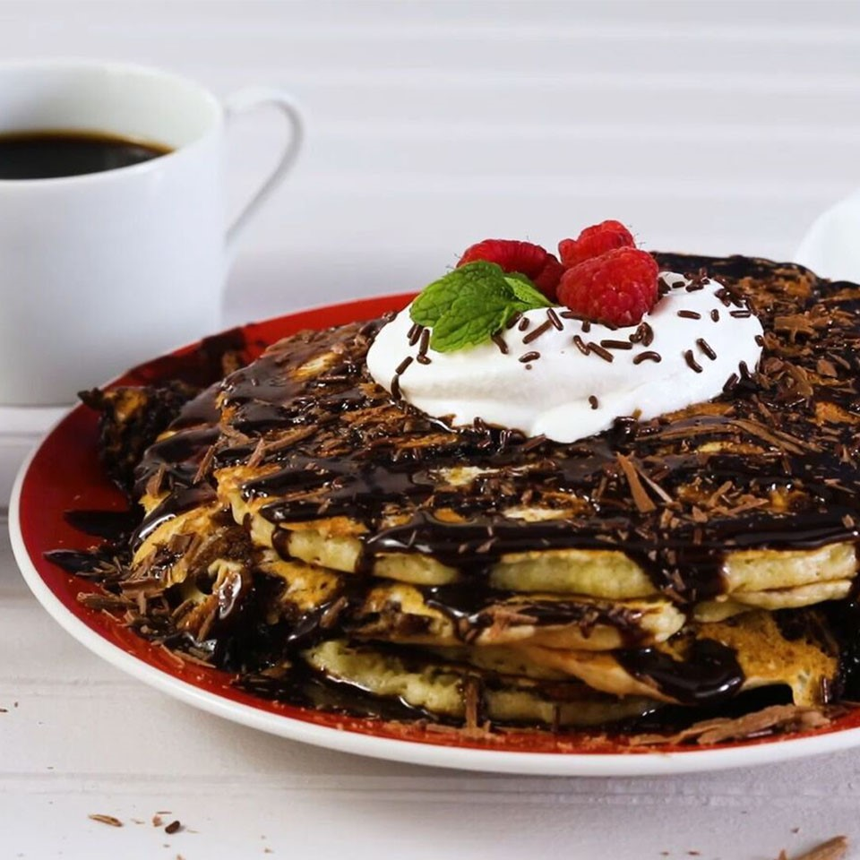

Brookie Pancakes

These pancakes are a chocolate chip cookie pancake and a brownie in one! As an added bonus, you have a pan of brownies to nosh on later! Breakfast and midnight snack in one recipe.
Serve pancakes immediately, perhaps with a dollop of whipped cream!
Ingredients
- cooking spray
- 2/3 cup all-purpose flour
- 1 tablespoon and 1 teaspoons white sugar
- 4/5 teaspoon baking powder
- 1/3 teaspoon baking soda
- 1/3 teaspoon salt
- 2/3 cup buttermilk
- 2/3 egg, beaten
- 1 tablespoon and 1 teaspoons butter, melted
- 4/5 teaspoon vanilla extract
- 2 1/2 tablespoons and 1/2 teaspoon semisweet chocolate chips
- 2/3 package brownie mix
- 1/4 cup and 1 tablespoon and 1 teaspoons vegetable oil
- 1 1/3 eggs
- 2 1/2 tablespoons and 1/2 teaspoon water
Method
-
Preheat oven to 350 degrees F (175 degrees C). Line a 9-inch
baking pan with parchment paper; grease parchment paper with cooking spray.
- Whisk flour, sugar, baking powder, baking soda, and salt together in a bowl.
-
Combine buttermilk, egg, butter, and vanilla extract together in a small bowl,
beating to break up the egg. Add flour mixture; stir until just combined. Fold
chocolate chips gently into the batter. Allow batter to rest for 5 minutes.
- Combine brownie mix, oil, eggs, and water in a large bowl; whisk together until smooth.
-
Pour 1/2 cup of the brownie batter into a squeeze bottle, pastry bag with a small round tip,
or large resealable plastic bag with corner snipped off. Reserve remaining batter.
-
Heat a large nonstick skillet over medium-low heat. Drop 1/3 cup pancake batter into the skillet,
shaking skillet to spread batter evenly. Drop 5 nickel-size dollops of brownie batter over the pancake;
swirl using a skewer or knife edge. Cook until edges are dry, 2 to 3 minutes. Flip and cook until set
on the other side, 1 to 2 minutes. Repeat with remaining batters.
- Pour reserved brownie batter into the prepared pan.
-
Bake in the preheated oven until a toothpick inserted into the center comes out clean, 28 to 30 minutes.
Cool on a wire rack before slicing.
Home Page